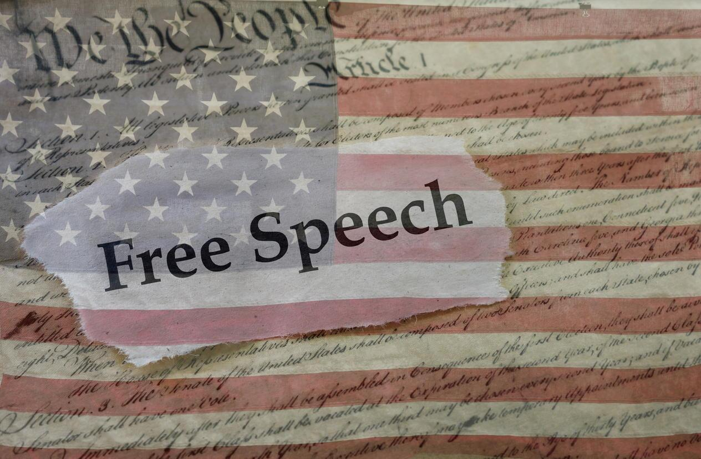

7 min read

Before we consider this question directly, let's start with a review of relevant legislation and technology, using our situation in the US as a point of focus.
The First Amendment to the US Constitution, ratified in 1791, states:
Congress shall make no law respecting an establishment of religion, or prohibiting the free exercise thereof; or abridging the freedom of speech, or of the press; or the right of the people peaceably to assemble, and to petition the government for a redress of grievances.
This language is gracefully brief and concise, but I think there are a number of significant elements worth pointing out.
By implication, the authors had in mind three principal players:
There is nothing in this amendment offering to shield anyone from the consequences of their speech, or to absolve them from any responsibility for the content of their speech, or to allow them to speak with anonymity.
This amendment only constrains Congress, and perhaps by extension other governmental authorities, from prohibiting free speech. In particular, the amendment does nothing to guarantee any speaker a forum or platform from which to communicate their speech.
The adverb “peaceably” is applied to the people's right to assemble. The New Oxford American Dictionary defines this word to mean “inclined to avoid argument or violent conflict.”
Now let's fast forward a couple of centuries to the arrival of the Internet and the World Wide Web. These new technologies provided novel mechanisms for authoring and distributing speech, and recent months and years have only seen growing controversy over the issue of roles and responsibilities in this space.
In particular, I think, there are a couple of areas of particular contention that I'd like to focus on today.
And now we come to a piece of US legislation known as Section 230 of the Communications Decency Act, passed into law in 1996. Again, the language is remarkably concise:
No provider or user of an interactive computer service shall be treated as the publisher or speaker of any information provided by another information content provider.
When first published, this legislation helped to democratize free speech on the Internet, by allowing ordinary citizens to speak freely without each of us having to host our own website – instead, “interactive computer services” could host the speech for many users without having to take responsibility for the speech articulated by those users. This greatly expanded access to Internet speech, and has now for many years been viewed as generally a good thing.
But it's worth noting that at this point in the history of the Internet, an “interactive computer service” was generally imagined to be a provider of technical services – something like America Online (aka AOL), and that this was long before the emergence of social media such as Facebook and Twitter.
Fast forward to today, and we see huge corporations hosting vast networks of communication, and providing online venues for global assembly.
Is it time to update our legislation?
I will argue that it is past time for such a change.
Let us consider, first, the role of publisher. How can we distinguish a publisher from a simple provider of an interactive computer service?
I believe that we can and should firmly draw the line in this way:
A publisher exercises some control over what content a viewer sees, when they see it, how likely they are to see it, and/or how easily they can see it. (And this control would include the display of advertisements that were not solicited by the reader.)
So let's test this definition a bit.
Question: Can it be fairly applied to traditional publishers, including newspapers and magazines, whether published on paper or digitally?
Answer: Yes, I think we can all see the traditional role of a publisher being included within this definition.
Question: Does it turn all internet service providers into publishers? In other words, is it too broad?
Answer: No. Companies that provide simple Internet connectivity, without bias, would not fall within this definition. Similarly, a service such as Micro.blog, that shows no advertising, and that allows users to freely select whom they wish to follow, and that then presents speech from those who are followed, organized into a chronological timeline, without bias, would not be included in this definition.
Question: What sorts of providers would become publishers under this definition, and would that assignment of responsibility be unreasonable?
Answer: Companies like Facebook and Twitter would become publishers, both because they present users with unsolicited advertising, and because they exercise considerable control over the content that is promoted into users' news feeds. Is this unreasonable? Consider that almost all of the controversy that has erupted over social media has involved the selection and promotion and amplification of items of interest, in order to maximize profits for the provider. The fact that much of this is done by proprietary algorithms created by the provider, rather than traditional flesh-and-blood editors, should in no way absolve these sorts of publishers of responsibility for the content that they promote.
Question: Would such a definition unreasonably infringe on the right to free speech, as provided by our first amendment?
Answer: Here, perhaps, it is time to refer to Richard Stallman's classic distinction made when advocating for free software: he says that it is free as in free speech, not as in free beer. In other words, our Bill of Rights does not guarantee that speech can be communicated and amplified without cost, or without consequence.
The other role worthy of reconsideration is that of host for online assemblies.
I think we can all agree that the “right of the people peacably to assemble” has to be extended in today's world to virtual assemblies: online groups and forums.
The role of host for such assemblies is nowhere called out, implicitly or explicitly, by our First Amendment.
But then we come back to that word “peaceably.”
And so it would seem reasonable to require a host for such an assembly, whether held in person or online, to make some effort to ensure that such assembly does nothing to encourage “violent conflict,” and to assign some degree of responsibility for any violence conducted or coordinated or explicitly promoted by such an assembly.
Now if such an assembly occurs spontaneously in the street, or online between people already known to each other, then that assembly may have no host, and so may reasonably be considered entirely outside of this discussion.
But if such an assembly occurs as part of an online group that has been intentionally created by an individual or an organization, and involves any degree of active or automated moderation, then I contend that we should interpret such a gathering as having a host, and I think it reasonable to assign such a host some responsibility to ensure a peaceable discussion.
Many of the problems we are encountering today, on almost a daily basis, are occurring because of a lack of assigned responsibility. Memes appear mysteriously in our social media feeds and we have no way of knowing where they came from, and what nation's laws might govern them. And we have no way of knowing who, if anyone, is legally responsible for the content we are seeing.
Section 230 of the Communications Decency Act provided broad absolution for providers of interactive computer services. And to the extent that such a ruling helps to enable broader access to modern communications platforms, it is a good and noble thing.
However the founders of our country had no intention of making speech free as in “free beer,” and they had no intention of allowing speech to be articulated and amplified by actors who could avoid all responsibility for the content they were promoting.
It is now time for our legislation to catch up with our modern situation, and to clarify definitions and responsibilities for two important classes of actors who should meaningfully be distinguished from simple providers of technical services:
Clarifying these roles and responsibilities in the manner I am suggesting today:
I urge our federal legislators to take up such legislation as quickly and as urgently as is practical, and urge my fellow citizens to petition their legislators for this redress of grievances.